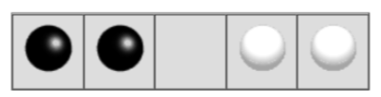
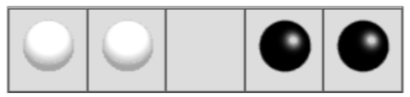
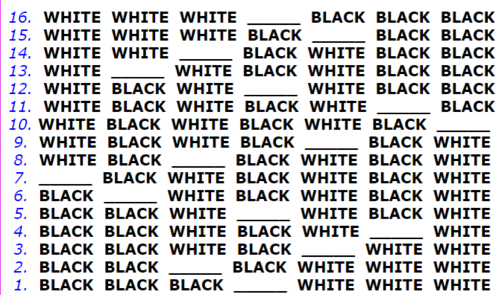

Backtracking
backtracking is a form of recursion
The usual scenario is that you are faced with a number of options, and
you must choose one of these. After you make your
choice you will
get a new set of options, just what set of options you get depend on
what choice you made. this procedure is
repeated over and over until you reach a final state. if you made a good
sequence of choices, your final state is goal state, if
you did't,
it isn't.
conceptually, you start at the root of a tree, the tree probably has
some good leaves and some bad leaves,though it may be that
the leaves are all good and all bad. you want to get to a good leaf. At
each node,begining with the root,you choose one of its
children to move to, and you keep this up until you get to a leaf.
Suppose you get to a bad leaf.you can backtrack to continue the search
for a good leaf by revoking your most recent choice,
and trying out the next options in set of options.If you run out of
options ,revoke the choice that you got here, and try
another
choice at that node.if you end up.if you end up at the root with no
options left, there are no good leaves to be found.
This needs an example

- Starting at Root, your options are A and B, you choose A.
- At A, your options are C and D, you choose C.
- C is bad, Go back to A.
- At A, you have already tried C, and it failed. Try D.
- D is bad. Go back to A.
- At A,you had no options left to try. Go back to Root
- At Root, you have already try A,try B.
- At B, your options are E and F,try E.
- E is good. congratulations!
In this example we drew a picture of a tree. the tree is an abstract
model of possible sequences of choices we could
make. there is also a data structure called a tree, but usually we don't
have a datastructure to tell us what choices we
have.(if we do have actual tree data structure, Backtracking on it is
called depth-first tree searching.)
The Back tracking algorithm
boolean solve(Node N){
if n is a leaf node {
if the leaf is a goal node, return true
else return false
}else{
for each child c of n {
if solve(c) succeeds, return true
}
return false
}
}
Notice that the algorithm is expressed as boolean fuction.This is
essential to understanding the algorithm.If
solve(n) is true,that means node n is part of a solution--that is, node
n is one of the nodes on path from the root to
some goal node. We
say that n is solvable. if solve(n) is false, then there is no path that
includes n to any goal node.
how does this work?
- If any child of n is solvable,then n is solvable.
- If no child of n is solvable, then n is not solvable.
Hence,to decide whether any non-leaf node n is solvable(part of a path
to a goal node),all you have to do is test whether any
child of n
is solvable. This is done recusively, on each child of n in the above
code, this is done by lines.
for each child c of n {
if solve(c) suceeds, return true
}
return false
Eventually the recursion will "bottom" out at a leaf node. If the leaf
node is goal node,it is sovable;if the leaf node is not a goal
node,it is not solvable. This is our base case.In the above code,
this is done by the lines
if n is a leaf node {
if the leaf is a goal node,return true
else return false
}
The backtracking algorithm is simple but important.you should understand
it thorughly. Another way of stating it is as follows:
- To search a tree
-
If the trees consists of a single leaf,test whether it is a goal
node
-
Otherwise, search the subtrees until you find the one containing a
goal node,or until you have
searched them all unsucessfully
Non-recursive backtracking, using a stack
Backtracking is rather typical recursive algorithm, and any recursive algorithm can be rewritten as stack algorithm. In fact, that's how your recursive algorithm are translated in to machine or assembly language.
boollean solve(Node n){
put node n on the stack;
if the node at the top of the stack is leaf{
if it is a goal node,return true
else pop it of the stack
}
else{
if the node at the top of the stack has untried children
push the next united child onto the stack
else pop the node off the stack
}
return false
}
starting from the root the only node that can be pushed on to the stack are children of the node curently on the top of the
stack, and this are only pushed on one child at a time; hence, the node on the stack at all time describe a valid path in the
tree. Nodes are removed from the stack only when it is known that have no goal nodes among their descendents. Therefore,
if the root node get removed(making stack empty),there must have been no goal nodes at all,and no solution to the
problem.
When the stack algorithm terminates successfully, the nodes on the stack from(in reverse order) a path from the root to goal
node.
Similarly, when the recursive algorihtm finds a goal node, the path information is embodied(in reverse order ) in sequence of
recursive calls. Thus as the recursive unwinds, the path can be recovered one node at a time, by(for instance)printing the node
at the current level,or storing it in an array.
Here is the recursive backtracking algorithm, modified slightly to print(in reverse order)the nodes along the succesful path.
boolean solve node(n){
if the leaf node {
if the leaf is a goal node{
print n
return true
}
else return false
} else {
for each child c of n{
if solve c succeeds {
print n
return true
}
}
return false
}
}
Keeping backtraking simple
All of these versions of backtracking algorithm are pretty simple, but when applied to a real problem, they can get pretty
cluttered up with details. even determining whether the node is a leaf can be complex:
For example, if the path represent a series of moves in a chess endgame problem,the leaves are the checkmates and statemate
solutions
To keep the program clean,therefore, tests like these should be buried in methods. In chess game,for example,you could test
whether a node is a leaf by writting a gameOver method(or you could even call itisLeaf).This method would encapsulate all the
ugly details of figuring out whether any possible move remain.
Notice that the backtracking algorithms require us to keep track, for each node on current path, which of its children have
been tried already(so we don't have to try them again). In the above code we made this look simple, by just saying for each child
c of n . In reality, it may be difficult to figure out what the possible children are,and may be no obvious way to step through
them. In chess,for example ,a node can represent one arrangement of pieces on a chessboard, and each child of that node can
represent the arrangement after some piece has made a legal move.How do you find these children, and how do you kepp track
of which of which one's you already examined?
The most straightforward way to keep the track of which children of the node have been tried is as follows:Upon intial entry to the
node(that is,when you first get there from above), make a list of all its children.As you try each child, take it off the list.when
the lsit is empty,there are no remianing untried children,and you can return "failure."This is simple approach, but it may required
quite a lot of additonal work.
There is an easier way to keep track of which children have been tried. if you can define an ordering on the children. if there is an
ordering,and you know which child you just tried, you can determine which child to try next.
For example, you might be able to number thechildren 1 through n,and try them in numerical order.Then, if you have just tried
child k,you know that you have already tried children 1 throughk-1,and you have not yet tried children ,k+1through n.Or,if you
are trying to color a map with just four colors, you can always tryred first,then yellow, then green,then blue.If child yellow fails,
you know to try child green next. If you are searching a maze,you can try choices in the order leaft,straight,right(or perhaps
north,east,south,west).
It isn't always easy to find a simple way to order the children of a node.In the chess game example,you might number your
pieces(or perhaps the squares of the board )and try them in numerical order;but in addition each piece may also have several
move, and these must also be ordered
Example:Tree Search
For starters,let's do the simplest possible example of backtraking,which is searching an actual tree.We will also use the
simplest kind of tree,a binary tree.
A binary tree is a data structure composed of nodes.One node is designated as the root node.Each node can refernce(point
to) zero,one, and two other nodes,which are called its childrens.The children are referred to as the left child and/or the right child.
All the nodes are reachable(by one or more steps)from the root node, and there are no cycles.For our purposes,although this is not
part of the defination os a binary tree,we will say that a node might or might not be a goal node,and will contain its name. the
first example in this paper(which we repeat here) shows a binary tree.
Here's a defination of the Binary Tree class:
public class Binary Tree{
Binary Tree leftChild = null;
Binary Tree rightChild = null;
boolean isGoalNode = false;
String name;
BinaryTree(String name,BinaryTree left,BinaryTree right,boolean isGoalNode){
this.name = name;
leftChild = left;
rightChild = right;
this.isGoalNode = isGoalNode;
}
}
Next we will create a treesearch class,and in it we will define a method makeTree() which construct the above binary tree.
static binary Tree makeTree(){
BinaryTree root, a,b,c,d,e,f;
c= new BinaryTree("C",null,null,false);
d= new BinaryTree("D",null,null,false);
e= new BinaryTree("E",null,null,false);
f= new BinaryTree("F",null,null,false);
a= new BinaryTree("A",c,d,false);
b= new BinaryTree("B",e,f,false);
root=new BinaryTree("Root",a,b,false);
}
here's a main program to create a binary tree and try to solve it:
public static void main(string args[]){
BinaryTree tree = makeTree();
System.out.orintln(solvable(tree));
}
And finallym here's the recursive backtracking routine to "solve" the binary tree by finding a goal node.
static bollean solvable(BinaryTreenode){
/* 1*/ if(node==null) return false;
/* 2*/ if(node isGoalnode) return true;
/* 3*/ if(solvable(node.leftChild)) return true;
/* 4*/ if(solvable(node.rightChild)) return true;
/* 5*/ return false;
}
here's what the numbered lines are doing:
- If we are given a null node,it's not solvable.This statement is so that we can call this method with the children of a node,without
first checking whether those children actual exist.
- If the node we are given is a goal node,return success.
- See if the left child of the node is solvable, and if so,conclude that node is solvable.We will only get to this line if node is non-null
and is not a goal node, says to
-
Do the same thing for the right child.
- Since neither child of node is solvable,node itself is not solvable
This program runs corrrectly and produces the unenlightening result true.
Each time we ask for another node, we have to check if it is null.In the above we put that check as the first thing in solvable. An alternative would be to check first whether each child exists, and recur only if they do. here's that alternative version:
static boolean solvable(BinaryTree node){
if(node.isGoalNode) return true;
if(node.lestChild !=null&&solvable(node.leftChild)) return true;
if(node.rightChild !=null&&solvable(node.rightChild)) return true;
return false;
}
I think the first version is simpler but the second version is efficient.
What are the children?
One of the things that simplifies the above binary tree search is that , at each choice point,you can ignore all the previous choices.
previous choices don't give you any information about what you should do next; as far as you know, both the left and the
right are possible solution. In many problems, however, you may be able to eliminate children immediately,without
recursion.
Consider,for example, the problem of four-coloring a map.It is a theorem of mathematics that any map on a plane, no matter
how convoluted the countries are,can be colored with at most four colors, so that no two countries that share a border are the
smae color.
To color a map, you choose a color for the first country, then a color for the second country, and so on,until all countries are
colored
there are two ways to do this:
- Method 1.Try each of the four possiblr colors, and recur.when you run out of countries, check whether you are at a goal node.
- Method 2. Try only those colors that have not already been used for an adjacent country,and recur. If an dwhen you run out of
countries, you have succesfully colored the map.
Let's apply each of these two methods to th e problem of coloring a checkboard. This should be easily solvable; after all, a
checkerboard only needs two colors.
bollean maplsOK()
Used by method 1 to check(at a leaf node) whether the entire map is coloed correctly.
bolean okTocolor(int row,int column, int color)
Used by method 2 to check, at every node, whether there is an adjacent node already colored with the given color.
int[]nextRowAndColumn(int row,int column)
Used by both methods to find the next"country"(actually, the row and column of the next square on the checkboard).
Here's the code for method 1:
bollean explore1(int row, int column, int color){
if(row>=NUM_ROWS)return maplsOK();
map[row][column] = color;
for(int nextcolor = RED; nextcolor <= BLUE;nextcolor++){
int[] next = nextRowAndColumn(row, column);
(ifexplore(next[0],next[1],nextColor)) returntrue;
}
return false;
}
And here's the code for methos 2:
bollean explore2(int row, int column, int color){
if(row>=NUM_ROWS)return true;
if(oktocolor(row,colomn,color)){
map[row][colomn] = color;
for(int nextcolor= RED;nextcolor<=BLUE;nextcolor++){
int[]next = nextRowandColumn(row, column);
if(explore2(next[0],nextColor))return true;
}
}
return false;
}
Those appear pretty similar, and you might think are equality good.however, the timing information suggests otherwise
| |
2 by 3 map |
3 by 3 map |
3 by 4 map |
| Method 1: |
60 ms. |
940 ms. |
60530 ms.(1 minute) |
| Method 2: |
0 ms. |
0 ms. |
0 ms. |
The zeroes in the above table indicates times too short to measure (less than 1 millisecond). why this huge difference ? Either of
these methods could have exponential growth. eliminating a node automatically eliminates all os its descendents. and this will
often prevent exponential growth. conversely, by waiting to check until a leaf node is reached, exponential growth is practically
guaranted. is there is any way to eliminate children (reduce the set of choices ),do so
Debuging techniques
Often our first try at a program does't work,and we need to debug it.Debuggers are helpful, but sometimes we need to fall
back on inserting print statement.there are some simple tricks to making effectuve use of print statements. These tricks can be
apllied to any program.but are essentially useful when you are trying to debug recursive routines.
Trick #1:Indent when you print method entries and exists.
Often, the best debugging technique is to print every method call and return (or at least the most important ones).you probably
want to print , for each method, what parameters it came in with, and what value it leaves with. however,if you just print a long
list of these,it's hard to match up method exists with their corresponding entries.indenting to show the level of nesting can help.
Trick #2: Use specialized print methods for debugging.
Don't cultter up your actual code more than must. Also remember that code inserted for debugging purposes can itself
contain bugs, or(in the worst case)can affect the results, So be very careful with it.
Here's our debugging code.For this trival program, there's almost more debugging code than actual code,but in larger programs
the prportions will be better.
static String indent ="";
static String name(BinaryTreenode){
if(node==null)return null;
else return node.name;
}
static void enter(BinaryTreenode){
System.out.println(indent + "Entering solvable("+name(node)+")");
indent = indent +"|";
}
static boolean yes(BinaryTreenode){
indent=indent.substring(3);
system.out.println(indent + "solvable("+name(node)+")return true");
return true;
}
static boolean no(BinaryTree node){
indent = indent.substring(3);
system.out.println(indent + "solvable("+name(node)+")return false");
return false;
}
To use this code, we modify solvable as follows:
static boolean solvable(BinaryTree node){
enter(node);
if(node == null)return no(node);
if (node.isGoalNode)return yes(node);
if (solvable(node.leftChild))return yes(node);
if (solvable(node.rightChild))return yes(node);
return no(node);
}
And we get these results:
Entering solvable(Root)
| Entering solvable(A)
|| Entering solvable(C)
||| Entering solvable(null)
||| solvable(null) returns false
||| Entering solvable(null)
||| solvable(null) returns false
|| solvable(C) returns false
|| Entering solvable(D)
||| Entering solvable(null)
||| solvable(null) returns false
||| Entering solvable(null)
|| solvable(D) returns false
| solvable(A) returns false
| Entering solvable(B)
|| Entering solvable(E)
|| solvable(E) returns true
| solvable(B) returns true
Solvable(Root)returns true
true
Trick #3 discard your debugging statements.
Writing debugging staements is programming too.Often it's as much work to debug the debugging staements as it is to debug
the actual program.Once your program is working,why throw this code away?
Obviously, you don't want to print out all this debugging information from a program you are ready to submit (or to turn over to
your manager). You could comment out your debugging calls,but that can be a lot of work.What's more,in the above example,
you would have to replace every return(yes(node))with return (true), and every return(no(node))with return false.with all these
changes,you might introduce new bugs in to your system.
The simple solution is to make your debugging staements condition. for example,
static final boolean debugging = false;
static void enter(BinaryTreenode){
if(debugging){
System.out.println(indent + "Entering solvable("+name(node)+")");
indent = indent +"|";
}
}
static boolean yes(BinaryTreenode){
if(debugging){
system.out.println(indent + "solvable("+name(node)+")return true");
}
return true;
}
static boolean no(BinaryTree node){
if(debugging){
indent = indent.substring(3);
system.out.println(indent + "solvable("+name(node)+")return false");
}
return false;
}
In industry,actual programs often have multiplw flags to control differnt aspects of debugging.Don't worry too much about
making your code larger;modern compilers will notice that since the variable debugging is final,it can never be true, and the contolled code will be discarded.
Trick #4 Create an Exception.
If an Exception is thrown,you can get information about just where it happened by sending it the message
printstackTrace(printStream).Since an exception is an object like any other,you can create and throw your own Exceptions,
Howwver,Java programmers don't always realize that you can create an Exception without throwing it. For example,the following
code
newException("Checkpoint Charlie").printStackTrace(System.out);
will print out a message something like this, and the program will then continue normally. That is, above code just acts like a print staement.
java.lang.Exception:Checkpoint Charlie
at TreeSearch.Solvable(TreeSearch.java:53)
at TreeSearch.Solvable(TreeSearch.java:57)
at TreeSearch.main(TreeSearch.java:72)
at__SHELL38.run(__SHELL38.java:16)
at bluej.runtime.ExecServer.suspendException(Unknown Source)
Example: Cindy's Puzzle
I call the following puzzle "Cindy's puzzle" for historical reasons.You have some number n of black ball marbles and the same number
of white ball marbles and you have a playing board which consist simply of a line of 2n+1 spaces to put the marbles in.start with
the black marbles all at one end(say,the left),the white marbles all at the other end,and a freespace in between.

The goal is to reverse the positions of the marbles:

The black marbles can only move to the right, and the white marbles can only move to the left (no backing up). At each move, a
marble can either:
- Move one space ahead, if that space is clear, or
- Jump ahead over exactly one marble of the opposite color, if the space just beyond that marble is clear.
For example, you could make the following sequence of moves:

The backtraking method is named solvable and returns a boolean. In solvable we shall need to check whether we are at a leaf,
which in this case means a position from which no further moves are possible.This is't easy.
Now to the program. The Main program will initialize the board,and call a recursive backtracking routine to attempt to solve the
puzzle. The backtracking routine will either will either suceed and print out a winning path, or will fail, and the main program will have to
print out the bad news.
The backtracking method is named solvable and returns a boolean. In solvable we shall need to check whether we are at a leaf,
which in this case means a position from which no further moves are possible. This isn't so easy.
Each possible move will result in a new board position, and these new board positions are the children of the current board
position. Hence to find the children of a node (that is, of a board position), we need only find the possible moves from that node.
Remember that it is also highly desirable to find an ordering on these possible moves.
Here it is time to stop and take thought. To make progress, we must analyze the game to some extent. Probably a number of
approaches would work, and what follows is based on the way I worked it out. If you were to program this puzzle, you might find
a different but equally valid approach.
First, notice that if a marble has a move, that move is unique: if it can move ahead one square, then it cannot jump. If it can jump,
it cannot move ahead one square. This suggests that, to find the possible moves, we might assign numbers to the marbles, and
check each marble in turn. When we have looked at all the marbles, we have looked at all the possible moves. This would require
having a table to keep track of where each marble is, or else somehow "marking" each marble with its number and searching the
board each time to find the marble we want. Neither alternative is very attractive.
Next, notice that for a given board position, each marble occupies a unique space. Hence, instead of talking about moving a
particular marble, we can talk about moving the marble in a particular space. If a move is possible from a given space, then that
must be the only move possible from that space, because if the marble in that space has a move, it is unique. There is a slight
complication because not every space contains a marble, but at least the spaces (unlike the marbles) stay in one place.
Now we have a simpler ordering of moves to use in our program. Just check, in order, the 2n+1 spaces of the board. For each
space, either zero or one moves is possible. With this understanding, we can write a boolean method canMove(int[] board, int
position) which determines whether a move is possible from the given position:
- If the position is empty, no move is possible;
- If the position contains a black marble, the method checks for a move or jump to the right;
- If the position contains a white marble, the method checks for a move or jump to the left.
We write another method int[] makeMove(int[] oldBoard, int position) will take a board and a position, make a move from
that position, and return as its value a new board. (We could write this somewhat more efficiently by changing the old board,
rather than creating a new one, but here we are more concerned with simplicity.) In technical jargon, makeMove is "applicative"
rather than "mutative."
Along with canMove and makeMove, we are using methods puzzleSolved and printBoard with meanings that
should be obvious.
boolean solvable(int[] board) {
if (puzzleSolved(board)) {
return true;
}
for (int position = 0; position < BOARD_SIZE; position++) {
if (canMove(board, position)) {
int[] newBoard = makeMove(board, position);
if (solvable(newBoard)) {
printBoard(newBoard);
return true;
}
}
}
return false;
}
Along with canMove and makeMove, we are using methods puzzleSolved and printBoard with meanings that should be obvious.
Here is some output from the program:

Notice that the solution is given in reverse order: BLACK starts out on the left and WHITE on the right, as in the last
line. I've added line numbers to the actual output in order to emphasize this point. Backtracking always produces its
results (sequence of choices) in reverse order; it is up to you, the programmer, to reverse the results again to get
them in the correct order.